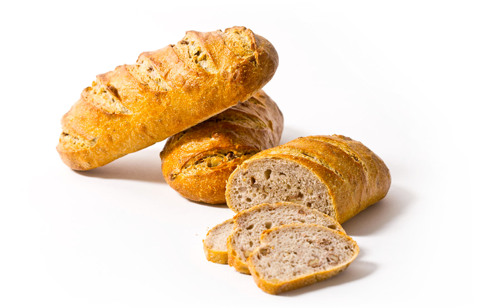

Rustic Bread

Ingredients
- Flour
- Water
- Yeast
- Salt
- Sugar
Steps
- Combine all ingredients in mixing bowl.
- Stir until combined and dough ball forms.
- Put dough on floured surface and knead for 6 minutes.
- Place dough in bowl and cover, allow to rest in warm area for 2 hours or until doubled in size
- Deflate the dough and pat into rectangle shape
- Fold the edges of the dough into the center and roll into log shape.
- Place dough on baking tray and allow to rest for 45 minutes after risen add diagnal slashes across the loave.
- Bake the bread and allow the bread to cool down before cutting
Enjoy!
Home